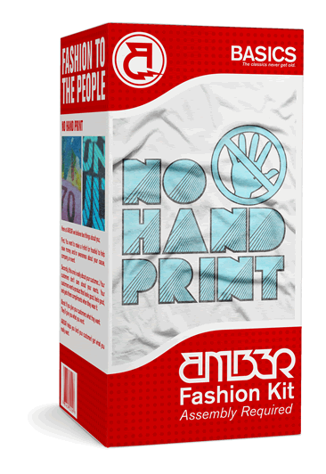
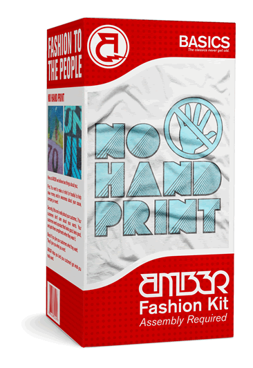

Follow @AMB3Rtshirts
Follow @AMB3Rtshirts
AMB3R
fashion inspired, custom t-shirts.
Printing Menu
Fashion Kits align your t-shirt with market trends.
 

14 ways to print t-shirts
AMB3R’s Fashion Kits provide you an easy way to make t-shirts that people want to wear. Our printing menu is used by major retailers and brands that you find in the mall. Depending on your project parameters we will help you determine the best way to print for an authentic and exciting t-shirt.
How it works
Two simple steps to get fashion inspired, custom t-shirts...

Learn about our Printing Menu...
Basic Printing
back to topStandard Screen Print
Standard plastisol screen print is the most economical way to print and often times all you need with great design.
No-Hand Print
No Hand Ink dyes the fabric of the garment, as opposed to Standard Screen Print which lays on top. We use discharge ink for dark garments and water-based ink for light garments.
CMYK Print
Cyan, Magenta, Yellow and Black create a color explosion. Use CMYK to portray any photographic image, or as a means to create cutting edge styles. A nice soft-hand accompanies this print.
Eco Print
A water-based ink that plays well with any color or fabric type.
Watch a quick video that explains the ink differences.
Celebrity Printing
back to topFoil + Screen Print
Foil is how to get noticed. Foil is the rock star's way of saying "You know me... you just forgot which band I drum for." Adding foil will ensure this tee remains on high rotation.
Flock + Screen Print
Flock lets people know you care about the little things in life. Use it when the design has animals, flourishes, or happy skulls.

Full Shirt Print
It cannot print any bigger than this.
'Nuff said.
Over The Sleeve Print
This print is like a full-time hug.

Vapor Print
A sublimation technique with unlimited colors!
Multi-media Printing
back to topFabric + Screen Print
Made popular by Abercrombie & Fitch, this kit is great for creating a vintage, or collegiate t-shirt.
2 Layer + Screen Print
Adding a second layer adds depth and dimension. Totally worth it.
Thread + Screen Print
Thread draws attention to a specific part of the design.
Fabric Only
Fabric gives a fresh look to a logo.
Thread Only
A creative use of embroidery.